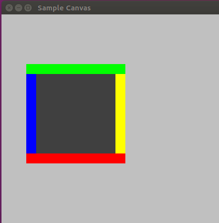
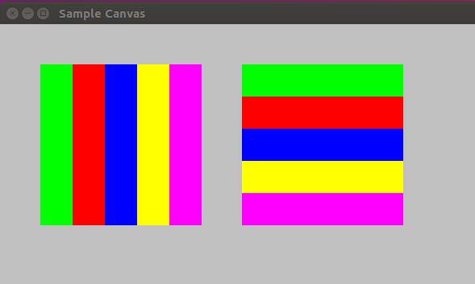

In this task, we will introduce layout managers for containers,
but before that, it is time to start organizing the final version
of our classes, something that will help us in the coming tasks.
Important: we ask that you copy all the classes from your
package object.gui.task3
from the previous source folder "task3"
to the package
object.gui
in the source folder "task4".
Yes, we are asking to replace all the existing classes
in the package
object.gui.
There were mock-classes, just there to make sure
you didn't have many compilation errors when you started
this sprint.
This new package is the beginning of the final version
of our graphical toolkit, congratulations, this is a
major milestone.
Reminder: make sure that Eclipse did not mix
your imports. Make sure that none of the classes
in the package
object.gui
imports any class from the package
object.gui.task3.
Important: to prepare your code for this task, you have to add
some fields and methods to the classes that you just
copied to the package
object.gui.
Make sure to add the following lines to the class object.gui.Component:
class Component {
protected Dimension m_prefSize;
/**
* Gets the preferred size of this component.
* @return a dimension object indicating this component's preferred size
*/
public Dimension getPreferredSize() {
if (m_prefSize==null)
return m_parent.dimension();
return new Dimension(m_prefSize);
}
/**
* Sets the preferred size of this component to a constant
* value. Subsequent calls to getPreferredSize will always
* return this value. Setting the preferred size to null
* restores the default behavior.
*
* @param preferredSize The new preferred size, or null
*/
public void setPreferredSize(Dimension d) {
m_prefSize = d;
m_parent.layout();
}
public void setPreferredSize(int w, int h) {
m_prefSize = new Dimension(w, h);
m_parent.layout();
}
}
Make sure to add also the following lines to the class object.gui.Container:
class Container {
protected LayoutManager m_layoutMgr;
public void layoutManager(LayoutManager mgr) {
m_layoutMgr = mgr;
}
public LayoutManager layoutManager() {
return m_layoutMgr;
}
/**
* Causes this container to lay out its components.
*/
public void layout() {
m_parent.layout();
}
protected void doLayout() {
if (m_layoutMgr != null)
m_layoutMgr.layout(this);
for (int i = 0; i < m_childrenCount; i++) {
Component c = m_children[i];
if (c instanceof Container)
((Container) c).doLayout();
}
}
/**
* Ask this component for its preferred size when
* layed up in its parent container.
*/
@Override
public Dimension getPreferredSize() {
if (m_prefSize!=null)
return new Dimension(m_prefSize);
if (m_layoutMgr != null)
return m_layoutMgr.preferredSize(this);
return new Dimension(0,0);
}
}
Finally, make sure to add the following lines to your class object.gui.Frame:
public class Frame extends Container {
@Override
public void layout() {
doLayout();
}
}
OK, we are good to go, everything should compile, across all
source folders, not just the source folder "task4".
If you still have compilation errors,
this is not expected, something did not go as planned. Please fix
any compilation error. If you need to, ask for help.
Non-Regression Test: the provided test class
WindowTest
in the package
object.gui.task4 should also
work. It is the same as the previous test, done in task3,
but using the copied classes in the package
object.gui,
so it should still work. If it does not, please fix any problems
before continuing with this task.
Now that we are setup correctly and the classes compile and work,
we can start this task about layout managers.
So far, we have coded explicit layouts of components and containers,
setting the bounds of our components manually. It is a useful approach
that can be just what one needs when one wants to
tightly control a layout. But often, it is easier to use layout
managers.
A layout manager is attached to a container and manages the layout
of the children of that container, hence the name layout manager.
If you look under the source folder "task4" and in the
Java package object.gui.layout,
you will see the abstract class LayoutManager:
public abstract class LayoutManager {
public abstract void layout(Container target);
public abstract Dimension preferredSize(Container target);
}
The method layout lays out
the given container, that is, determines the bounds for each
of the children of the given container. But applications
never call this method directly, applications call the
method Container.layout():
class Container {
/**
* Request this container to layout its children.
*/
public void layout() {
m_parent.layout();
}
protected void doLayout() {
if (m_layoutMgr != null)
m_layoutMgr.layout(this);
for (int i = 0; i < m_childrenCount; i++) {
Component c = m_children[i];
if (c instanceof Container)
((Container) c).doLayout();
}
}
}
class Frame {
@Override
public void layout() {
doLayout();
}
}
What is going on here? Well, if one called the method
layout on a container,
the intent is for that container to layout its children.
But in order to do so properly, the container needs to
know its own dimension. Right? This means the container
must have had its bounds set. But by who? Well, only
its parent can do that.
So to be able to layout a container, you must make
sure its dimension has been set by its parent,
which means you must make sure its parent has done a layout,
which recursively requires its parent to have had its dimension set,
and so on. We are facing a recursive algorithm that needs
a condition to stop.
Fortunately, the frame at the root of the tree has
had its dimension set when created since it
corresponds to the size of the window on the screen.
So one can always ask the frame to do a layout, resulting
in the layout of the entire tree via the method
doLayout. Notice
this is exactly what happens when asking
any container to layout since the method
layout percolates
the request up to the frame, which will result
in the layout of the entire tree.
The code should work, so you can try it out with
our examples in the
package object.gui.examples.
We gave you two examples, one with a border layout
(class BorderLayoutExample)
and the other with a flow layout
(class FlowLayoutExample).
These two examples rely on the traditionnal
border and flow layouts, both available through
the classes
BorderLayout and
FlowLayout
in the package
object.gui.layout.
|  |  |
|---|
This above design works and we understood how it works, right?
So now it is time to evaluate this design, that is, we need
to ask ourselves if we can do better. The design is clearly
not optimal since
we redo the layout of the entire tree, even if there is
only one container that needs to redo its layout.
Since the tree may be big, this is clearly not optimal.
We would like to do the layout of containers that need
to redo their layout and only for them.
The idea is to introduce a boolean flag to indicate if a container
needs a layout or not. Look at the modified code below:
class Container {
public void layout() {
if (!m_doLayout) {
m_doLayout = true;
m_parent.layout();
}
}
protected void doLayout() {
if (m_doLayout) {
m_doLayout = false;
if (m_layoutMgr != null)
m_layoutMgr.layout(this);
for (int i = 0; i < m_childrenCount; i++) {
Component c = m_children[i];
if (c instanceof Container)
((Container) c).doLayout();
}
}
}
}
class Frame {
@Override
public void layout() {
m_doLayout = true;
doLayout();
}
}
We can see how the optimization works, right?
The flag is set true when a layout has been asked
upon a container and on all its parent. Then,
the flag is used to prune out sub-trees of
containers that do not need to redo their layout.
That sounds good, right?
Did we forget to set the flag
m_doLayout in some cases?
If the parent container does a layout, it will set
the bounds of its children, using the method
setBounds(int,int,int,int).
If a container gets new bounds, it means its size
might has changed, right? If its size changed, it
needs to redo a layout of its children. So the class
Container
needs to override the method
setBounds(int,int,int,int),
just like this:
public void setBounds(int x, int y, int w, int h) {
m_doLayout |= (w!=m_width || h!=m_height);
super.setBounds(x,y,w,h);
}
Notice that we make sure that we force the flag
to true if the size has changed, but we left
it unchanged otherwise. It is important to preserve
the flag value if the size has not changed.
You could also code it this way:
public void setBounds(int x, int y, int w, int h) {
if (w!=m_width || h!=m_height)
m_doLayout=true;
super.setBounds(x,y,w,h);
}
Could we have called the method
layout?
Certainly not! The method
setBound is called
by the parent layout manager, while doing a layout.
So a layout is already underway, so there is no need
to ask for a new layout. Furthermore, this would
create an infinite recursion since doing a layout
on the frame would do a complete layout of the tree
and each container would ask a layout that would induce
the frame to redo a layout...
Make sure you understand all this. As usual, discuss this and ask question if you do not. .
Are we good with the code as it is? Not exactly,
you knew it, right?
A container should also
redo its layout if the set of its children change,
right? So we need to override the methods that
add or remove a child.
protected void added(Component child) {
...
layout();
}
protected void removed(Component child) {
...
layout();
}
But wait a second here, can we invoke the method
layout?
Do we risk an infinite recursion?
Well, what do you think? Justify your
answer.
We are OK, we can invoke the method
layout
if we make the assumption that the tree
of components is not changed during a layout,
which is a reasonable assumption if developers
of graphical components are told about it.
Therefore, invoking the method
layout
is not only safe, but mandatory, since we need
to percolate the request up to the frame
(the root of the layout tree).
Are we good now? You think so? Not quite. See, the layout
manager of a container may be changed. It would
seem logical to force a re-layout by the new
layout manager.
public void layoutManager(LayoutManager mgr) {
m_layoutMgr = mgr;
layout();
}
Are we good finally? Yes, we are. Yeah!
Now, an important question for you: did you understand
what we did here? Really understood? Look at the
following important points:
See, this is really what understanding a code is about.
You need to know it so well that you are
able to introduce an optimization and keep the code
working. This requires you, the developer, to understand
the code and to track all the methods that are impacted by
the optimization you want to introduce. And last, but not
least, you have do this before you start coding in order
to avoid stumbling on unforseen problems as you code or debug.
You need to design
a proper solution before you start coding it. We know, this
is not easy, but the more you try, the better at it you will
become.
Can we optimize further? Yes, we can. As it is,
each time a container is asked to do a layout,
via the method layout,
the layout of the entire tree is done, synchronously.
Right? Look at the method
layout,
it percolates up to the frame object and the class
Frame overrides
this method to call the method
doLayout
that recurses down the tree to redo the layout.
Of course, this works, especially with our optimization that
prunes the layout process for sub-trees that do not need
a relayout. But the synchronous part is not efficient.
For instance, imagine you are adding or removing several components
to or from a container. For each operation, a full layout will be
done. But is this necessary? Not really, a layout is only
really necessary before the next repaint. Indeed,
until the layout tree is repainted, the
fact that it needs a new layout is irrelevant.
It would even be incorrect with respect to the focus
mangement and the routing of mouse and keyboard events.
What are we saying here? We are saying that it is not necessary
or even correct to be super aggressive to do a complete layout, each time
the method layout is
called on a container. We should delay the actual re-layout
until the next paint. Just like this:
class Frame {
@Override
public void layout() {
m_doLayout = true;
repaint();
}
public void doPaint(Graphics g) {
if (m_doLayout)
doLayout();
super.doPaint(g);
}
}
This allows your code to do a bunch of changes to the
tree of components, across
several containers, and incur only the overhead of a single
final layout. Moreover, it ensures a correct routing of events.
For instance, imagine a click of a button
that reorganizes the graphical user interface, adding or removing
components. Also imagine that this happens on the button down event.
With an aggressive re-layout, the layout process will happen right
there and then. Consequently, the button up event might be erroneously
routed to a different component if the layout has sufficiently changed.
Indeed, with the new layout, the current mouse position
might be over a different component, computationally but not on the
screen since the window has not been repainted yet.
For the human that has clicked the mouse,
the mouse is still over the old component since the new layout
has not been painted on the screen yet. None of these problems will
happen if the layout occurs at the last moment, just before
the component tree is repainted.
Do you understant this new code? Do you understand the asynchronous
nature of the repaint and the relayout? This is important because
this is really what event-oriented programming is about.
Make sure you understand and discuss these points.
You need to. If you just read through, you may understand but
you will not learn. Discussing and experimenting are the two pillars
to your learning process.
The method preferredSize
on the class Component
determines the preferred size of the component.
Now let's think about this.
If you would be designing a layout manager, you would want
to write the code to layout a container. For that, you
would need to know the dimension of that container and
the preferred sizes for each children of that container.
You would then try to accomodate these preferred sizes
when setting the bounds of the children, that is,
their location and their dimension.
But how does a component know its preferred size?
For components that are not containers,
they are supposed to know their preferred size. If a component
does not know how its preferred size, it will use the dimension
of its parent. Look at the method
getPreferredSize
on the class
Component:
class Component {
protected Dimension m_prefSize;
public Dimension getPreferredSize() {
if (m_prefSize==null)
return m_parent.dimension();
return new Dimension(m_prefSize);
}
public void setPreferredSize(Dimension d) {
m_prefSize = d;
m_parent.layout();
}
public void setPreferredSize(int w, int h) {
m_prefSize = new Dimension(w, h);
m_parent.layout();
}
}
Note that the preferred size can be given to a component
by calling the method setPreferredSize
on the class Component.
But is it safe to invoke the method
layout in this context?
It should, right? Think about it and try to justify in your
own words before you read on. So, let's discuss this.
Setting the preferred size of
a component does not seem likely to happen within the
global layout of the component tree. Plus, what else could we
do? Changing the preferred size requires a re-layout.
Finally, what would happen if one would set the preferred size
on a component during a global layout?
With our optimization delaying the actual re-layout to the
next repaint, the worse case is that we will request another
asynchronous layout. Of course, there is a risk of an infinite loop:
layout - repaint - doLayout - setPreferredSize - layout.
But this is really a design bug on one of the components.
So we are good here, we will say that we can invoke
the method layout from
the method setPreferredSize.
We therefore have to make sure that developers know
about this.
But usually, a component does not rely on its preferred size
being set directly, it can compute its preferred size.
For instance, a button displaying
itself as an icon could use the size of that icon as its
preferred size. A label could compute the size of the text to
display, given a font size.
Any subclass of the class Component
can therefore override the method
getPreferredSize to do the
adequate computation. Of course, you would still check if the
preferred size was setup
by calling the method setPreferredSize
on the class Component.
So we are good for components that are not containers.
But what about child components that are in fact containers?
Some may know their preferred size because it was setup
with the method setPreferredSize
but it is unlikely. Most containers must compute their
preferred size based on the preferred sizes of their children.
The preferred size is computed by the associated
layout manager, calling the method
LayoutManager.preferredSize.
To confirm this, look at how the class
Container
overrides the method getPreferredSize:
public class Container {
@Override
public Dimension getPreferredSize() {
if (m_prefSize!=null)
return new Dimension(m_prefSize);
if (m_layoutMgr != null)
return m_layoutMgr.preferredSize(this);
return new Dimension(0,0);
}
}
Please do commit your work.